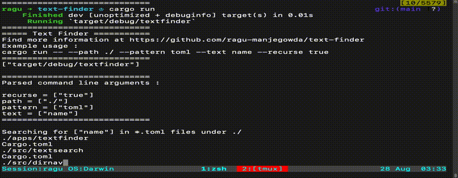
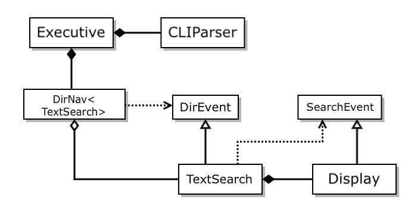

Why Rust
This project is my first baby step towards learning RUST.
If you are looking for a reason to why Rust, here is the video that I highly recommend - Considering Rust
Text Finder
|  |
|---|
| Text Finder in action - searching for “name” in *.toml files under “./” |
Text Finder is a tool for locating files containing text that matches a specified regular expression. It uses the facilities of RustDirNav and RustCmdLine libraries, and std::fs and regex crates.
It can be used to: * Find all files in a directory subtree with text that matches a specified regular expression. * Find all files that have specified extensions (patterns). * List all directories and their files in some directory subtree.
Design

Traits are specified by caller and implemented by called. This reverses the dependency chain Please feel free to check the dependencies in Cargo.toml files and hence called Dependency Inversion Principle or Type Erase

This is how text-finder packages are implemented according to the dependency inversion principle explained above.
Pros
- Each component can be built and compiled separately.
- Continuous output, good ergonomics for user.
- Input, Compute and Output are decoupled, they depend only on the interface defined by the upstream component.
Cons
- Little complex to implement
- Each component needs to use factory function to create it’s down stream component.
Dependencies and Build instructions
Using docker
Download image and start Docker interactive container
You might have to modify run script according to your needs.
Native
Highly recommend installing rust with rustup.
Build and Run
Run the textfinder app with the following commands
$ cargo clean # not required or optional
$ cargo update # not required or optional
$ cargo build --bin textfinder --release
$ cargo run --release --bin textfinder -- --path ./ --pattern toml --text name --recurse trueAdditionally, each module has examples and tests (refer workflow file for more info).
Credits and References
I am indebted to Prof. Dr. Jim Fawcett for motivating me (and many others) to learn rust and taking time to teach Rust for all of his former students through bi-weekly sessions.
This project and it’s design principles are largely based on what he taught.